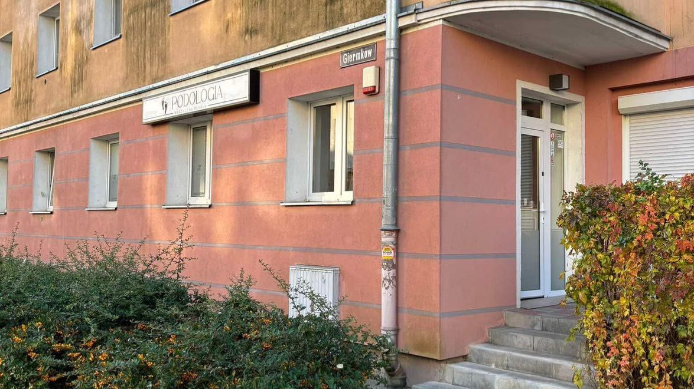
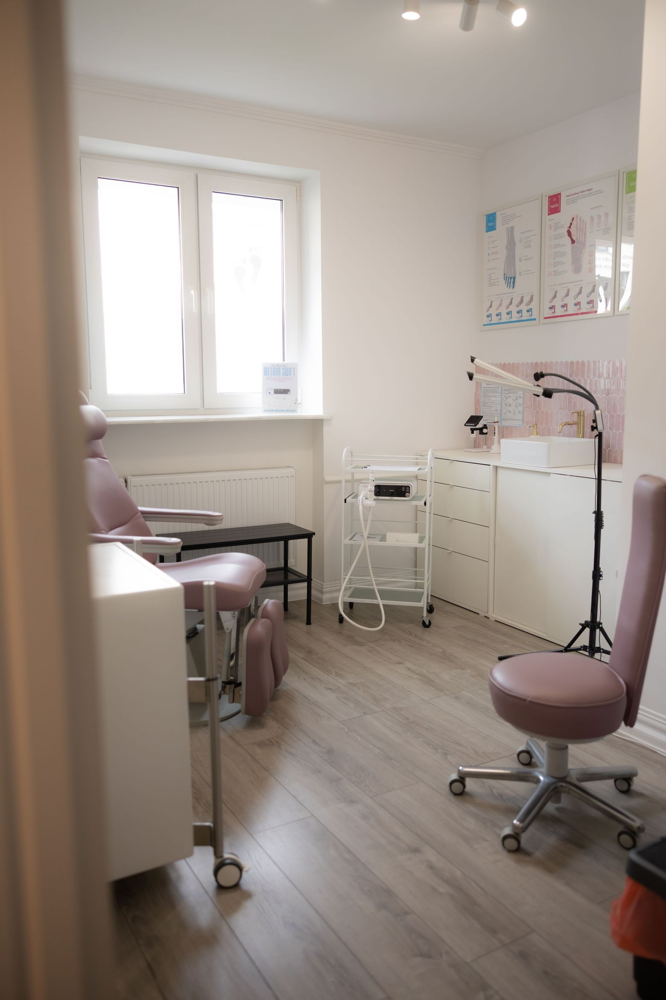
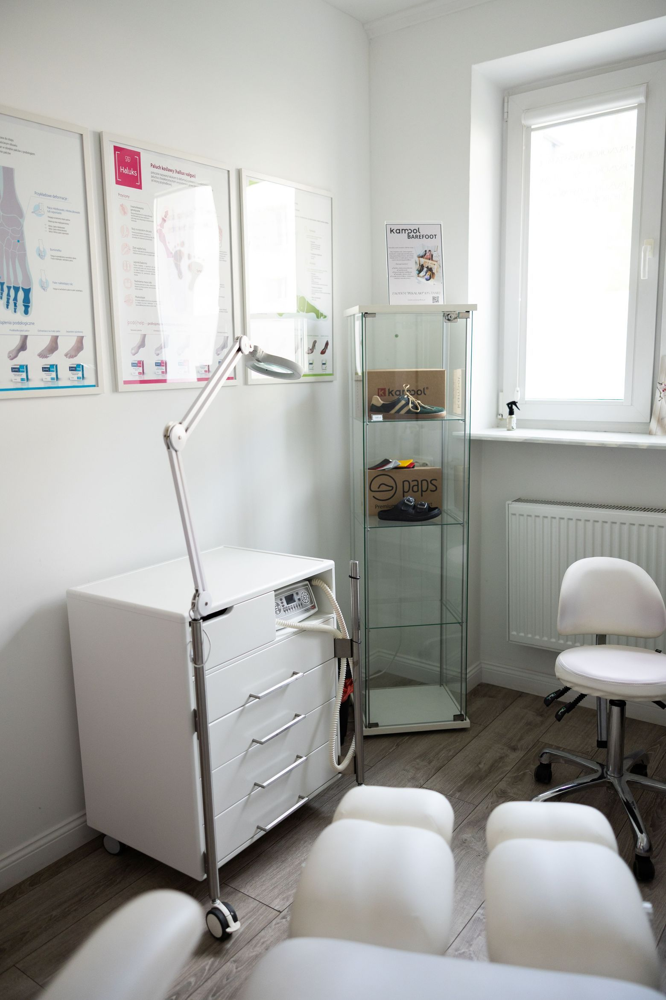

Magdalena Pękała
Magister kosmetologii ze specjalizacją z podologii.
Od wejścia przy Giermków 25 po fotel zabiegowy. Wybierz zdjęcie, aby je powiększyć.



Przyjmujemy po wcześniejszej rezerwacji. Wybierz termin na Booksy lub zadzwoń, jeśli potrzebujesz pomocy w wyborze usługi.
Podczas 30-minutowej konsultacji omawiamy Twoje potrzeby i oglądamy skórę oraz paznokcie. Cena wynosi 100 zł. Jeśli zabieg odbędzie się podczas tej samej wizyty, konsultacja jest bezpłatna.
Wyślij opis problemu i wyraźne zdjęcia na numer 512 962 412. Konsultacja online kosztuje 80 zł. Jeśli potrzebna będzie wizyta stacjonarna w ciągu 30 dni, gabinet odliczy tę kwotę od jej kosztu.
Wybierz konsultację stacjonarną. Podczas spotkania specjalistka obejrzy skórę i paznokcie oraz omówi z Tobą możliwy zakres zabiegu.
Według opisu usługi w Booksy zabieg nie wymaga specjalnego przygotowania. Jeżeli powodem wizyty są brodawki wirusowe, gabinet wskazuje je jako przeciwwskazanie do pedicure. Przy rezerwacji wybierz konsultację lub usługę dotyczącą brodawek.
Gabinet przyjmuje dzieci i dorosłych. Jeśli chcesz omówić potrzeby dziecka przed wizytą, zadzwoń pod 512 962 412.
Tak. Miejski wykaz partnerów podaje rabat 10% na zabiegi oraz ofertę 15% dla seniorów. Sprawdź aktualne warunki w programie Karty Mieszkańca ↗.
Gabinet mieści się przy ul. Giermków 25. Zobacz zdjęcie wejścia i trasę dojazdu.
Rozwiń kategorię, aby sprawdzić czas wizyty i cenę dla wybranego zakresu zabiegu.
Cennik według profilu Booksy. Aktualną cenę potwierdzisz podczas rezerwacji.
Magister kosmetologii ze specjalizacją z podologii.
Absolwentka studiów podologicznych. Szczególnie interesują ją wymagające przypadki.
Stan na 18 listopada 2026 r.
W udostępnionych opiniach osoby po wizycie doceniają staranność pedicure podologicznego, czystość sprzętu i serdeczne podejście zespołu.
Przeczytaj opinie na Booksy ↗